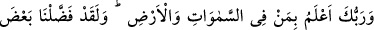

Bazıları insân-ı kâmilin yaşayışıyla ilgili olarak şöyle der: “Cenâb-ı Hakk’a sıdk,
halka insaf, nefse kahr, elinin altında olanlara şefkat, büyüklere hürmet, dostlara nasîhat,
düşmanları idâre, ulemâya tevâzu, fakirlere cömertlik, câhillere sükût ile muâmele
eder.”
55. Rabbin, göklerde ve yerde olan herkesi en iyi bilendir. Gerçekten biz,
peygamberlerin kimini kiminden üstün kıldık; Davud’a da Zebur’u verdik.
“Rabbin, göklerde ve yerde olan herkesi en iyi bilendir.” Allah gökyüzünde ve yerde
olanları ve onların gizli ve açık hallerinin ayrıntılarını bilir. İnsanlar bu halleri
sebebiyle diğer yaratılmışlar arasından seçilmeye ehil ve lâyık olurlar. Allah onlar
arasından peygamberlik ve velâyet için buna müstehak olanları seçer. Bu âyet soylu ve
asillerden birinin değil de Ebû Tâlib’in yetiminin peygamber olmasını, Bilâl, Suheyb,
Habbâb ve diğerleri gibi aç ve çıplak kimselerin onun ashâbı olmasını imkânsız gören
Kureyş’e bir cevaptır.
Âyette ‘göklerde olanlar’ ifâdesi, “Keşke bize melekler indirilseydi” (el-Furkan,
25/21) diyen müşriklerin sözlerini ibtal etmek için zikredilmiştir. ‘Yerde olanlar’
ifâdesi ise onların “Bu Kur’an iki şehirden bir büyük adama indirilse olmaz mıydı?”
(ez-Zuhruf, 43/31) sözlerine cevaptır. İki büyük şehirden maksad, Mekke ve Tâif’tir.
Kasdettikleri kimseler ise Velîd b. Muğîre el-Mahzûmî ve Urve b. Mes’ûd es-Sakafî ya
da başkalarıdır.
et-Te’vîlât’ta şöyle der: “Allah, gökyüzünde melekler ve İblis, yeryüzünde de mü’min
ve kâfirler gibi kendisinin lütuf sıfatının mazharı ve kahır sıfatının mazharı olanları en
iyi bilendir.”
“Gerçekten biz, peygamberlerin kimini kiminden üstün kıldık.” Beyzâvî ve onun
peşinden giderek Ebüssuûd Efendi şöyle der: “Yâni, biz onları nefsânî fazîletlerle ve
cismânî alâkalardan uzak olmakla birbirinden üstün kıldık, yoksa mallarının ve
takipçilerinin çokluğuyla değil. Dâvud (a.s.) bile böyledir. Allah onu kendisine verdiği
mülk ve saltanatla değil vahyettiği kitabla şereflenmiştir.”
Fakir (Bursevî) der ki: Bu ifâdenin peygamberlerin birbirine üstünlüğünün cismânî
alakalardan uzak olmakla olduğunu ifâde ettiği açıktır. Ancak bu hatadır. Çünkü onların
bu konudaki üstünlükleri ümmetin diğer fertlerine göredir. Peygamber kardeşlerine
nisbetle ise böyle bir üstünlük yoktur. İşin aslı şudur: Allah’a ulaşmaya ve âlem-i
kudsten ilim almaya ters olduğu için peygamberlerde rûhânî alâkalar bile yoktur. Bu
sebeple “Kalbde mülk ve melekût âlemine bir anlık bakış bile varken Allah’ı bilme (el-
ilmü billah) kapısı açılmaz.” demişlerdir. Mülk, eş ve çocukların çokluğu gibi cismânî